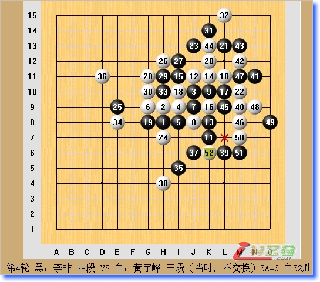
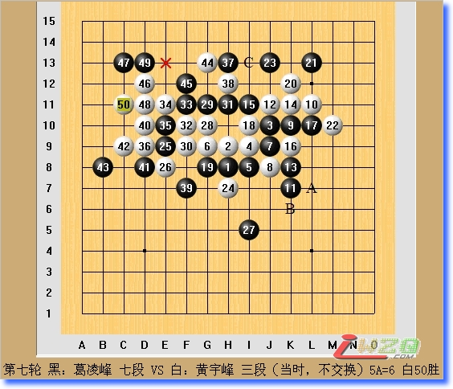

随谈全锦赛上2局棋
#1 随谈全锦赛上2局棋作者：有志青年 发表时间：2007-12-4 17:12:59
2007年全锦赛已经过去近2个月，现在才来做一个总结，可能有些晚，但却更能静下心来以平和的心态回顾这次天津之行，特别是对于一些胜负之外的东西。
早些时候一直在犹豫参不参加今年的全锦赛，直到快报名的时候听说有便宜的飞机票才决定去参赛，结果最后还是坐的火车，只能当作是笑谈了。比赛之前，并没有做过针对性的准备，也没有任何明确的目标，自然是名次越靠前越好。也许正是这种心态造成了我有些慢热，一直难以完全进入应有的状态，导致了几盘进入中盘战斗的苦局都或多或少的出现了一些问题，以下就第四轮和第七轮分别对李非和葛凌峰的2盘类似局面进行分析和探讨。
这2盘棋对方都布局疏星，我都执白，对方又都选择了大定式，行至25手，26手我给出了2种不同的应对。先看和李非那盘，我采取了积极的手段，26手意图掌握住先手以成势。交换至33，白棋虽然在左边保有外势，但并没有太多持续性的手段，于是我34手回防，以期打开下方的通道同时和上方在将来能产生呼应。35手，局面的好点，同时也是这盘棋的分水岭。对于35手，我并没有引起足够的重视，以为黑棋先手没有vct，和另一个类似的常见变化的区别仅在于上方多了几个子，认为对黑棋并没有太大的作用，于是我就不再看黑棋的子力结构以及之后的攻击变化而开始寻找自己做棋反击的点。36手落下之时，我对这贯通上下的一手很是满意，觉得黑棋很难再进行防御了，却不曾想是步败招。37活三，38必然，39!?我产生了疑惑，黑棋有v，白棋反v，这时候我才看到21、31可以继续反，脑中顿时有股不祥之感，继续深入下去的分析使我越来越心惊。黑欠4白进去反欠4，黑棋利用21、23继续反，白棋利用26、28反，黑挡之后有vcf!局面崩溃。于是白只能进21、23中间做套反v，黑棋再于39上面一格解杀还杀，之后白棋呢？几个冲四有没有用？虽然没有完全看清但已有无以为继之感。在时间的压力下，我只能无奈的落下了40手，也就错过了胜机。其实这时候白棋冲四能够给黑的vcf造个反四，然后左边做手就胜了，可惜在当时这是个盲点一直没有发现，而39如果直接走39上面一格则白棋冲四之后黑还是有v，黑胜定。实战如我预料的一般一直走到44手，在我几乎已经绝望准备要投子之时，对手的45让我莫名，44禁?我看了好几遍才敢确定，虽然最后赢了但很不是滋味，这棋走成这样都能赢唯有苦笑的份了。值得一提的是，在局后简单拆解的时候，我发现了40冲四解杀，但并没有发现黑棋39的正确胜法，所以我还是认为黑棋是没有胜的，正是这个论断使得在我和葛帅那盘棋埋下了祸根，同时又增添了戏剧性的效果。

第一轮在和樊星辰闷战成和的情况下，第二轮又对上了同队的葛凌峰老师，忽忽然有了前景黯淡之感。葛帅开局，和棋对上海争冠十分不利，于是他略做考虑开出了疏星。一直非常敬佩葛帅的拼搏精神，虽然疏星最近2年有了很多新的走法和研究，但是至始至终到后半盘白棋的机会很大。想到如果是我开，多半还是瑞星，于是乎，真的感到十分惭愧。到相同的25，我选择了常见的26。之后黑棋虽然有很多选择，但很难逐步建立起优势，而一旦黑棋丧失先手，白棋就会迎来机会。实战的27在近几年的比赛当中出现过多次，的确是局面的要点，而白棋大多跟防。而实际上黑棋局部没有vct所以白棋可以做棋。另一种多见的走法是27先在A位和28-B处白的强防交换，然后再29-27，这样黑就有vct，白必须跟防，但交换一手显然对黑棋是比较吃亏的，之后的攻击白棋如果不犯错黑棋也没有任何机会。实战的28是局部的强手，虽然只有一个活2但保留了多种攻击手段和连接做棋的方法，同时白棋有vct可以保留住先手，可以继续不断做棋以扩大优势，白棋局面十分生动。行至35，白36于39位做v就简单必胜了，但实战时眼见黑棋没有什么反击的方法走的过于稳妥防了黑棋的2，同时和上方的冲四相连接，一时的随手导致局面的复杂化。37做v，38不甘于防于C位怕将来黑棋对白棋在左边的攻击产生影响，黑棋有一连串的冲四又有了能够牵制白棋右边冲四的一个2，和我与李非那盘的局面如出一辙！但当时由于我还不知道黑的胜法所以并没什么担心。之后葛帅看了半天似乎也没看到杀就防了我一手。39之后，我进行了长考，怎么看似乎都离杀欠一点，直到只剩下十多分钟的时候才模模糊糊地看到杀。后来回上海之前葛帅十分郁闷地摆给我看黑棋的杀法时我才如梦初醒，再次只有苦笑的份了。

最后一轮之前我意外的以0.5的优势领先，对阵吴镝胜了就是第一，可惜在一个简单局面下由于心态失衡想快点结束比赛，导致产生了幻觉也不知道是什么原因走错一手，由于局面十分激烈黑棋就接近崩溃了，艰苦的中盘缠斗直到最后几分钟终于崩盘，面对着解不掉的44或长连，只能静静地等待超时声的响起，留下了无尽的遗憾，也就不再赘
#2 Re:随谈全锦赛上2局棋作者：gerbo 发表时间：2007-12-4 22:10:04
 我轻轻的来，正如我轻轻的走，挥一挥手，带走你的棋谱．．．
我轻轻的来，正如我轻轻的走，挥一挥手，带走你的棋谱．．．